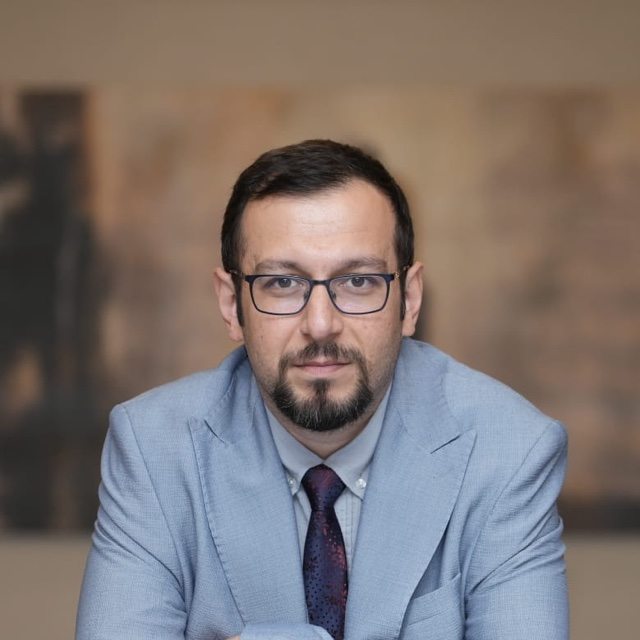
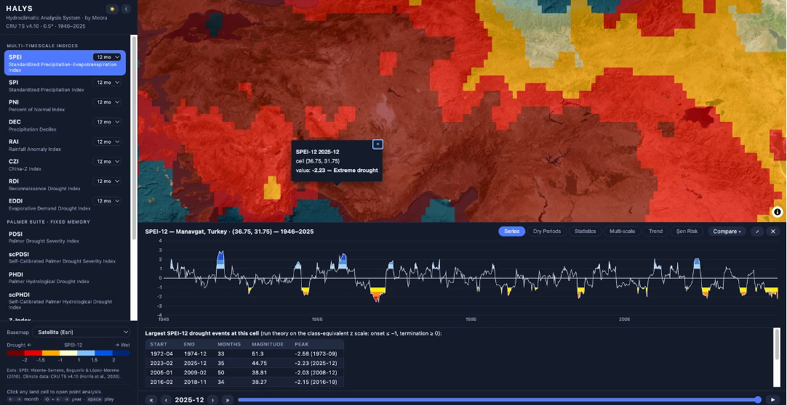
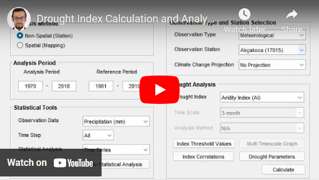
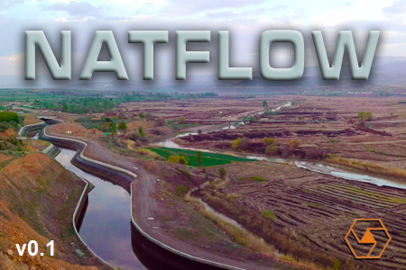
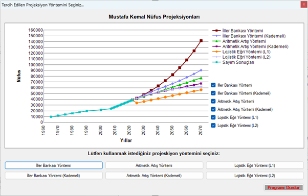
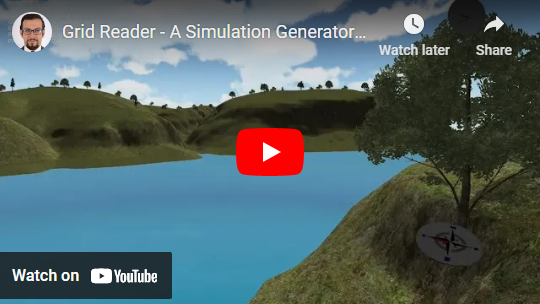
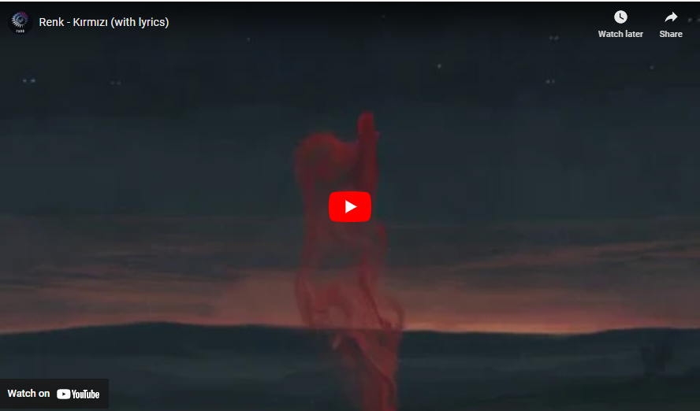

Mustafa Kemal Türkeri
I work on river basin planning, hydrological modelling and drought. For more than 12 years I have prepared basin management plans, drought and climate change assessments and water models for Türkiye’s water authorities and international funders, and I build the software and data tools behind that work.
Nehir havzası planlaması, hidrolojik modelleme ve kuraklık alanlarında çalışıyorum. 12 yılı aşkın süredir Türkiye’nin su idareleri ve uluslararası finansman kuruluşları için havza yönetim planları, kuraklık ve iklim değişikliği değerlendirmeleri ve su modelleri hazırlıyorum. Bu çalışmalarda kullandığım yazılım ve veri araçlarını da kendim geliştiriyorum.

Current focusGüncel çalışmalar
Basin leadHavza sorumlusu
6RBMP6NHYP
Technical Assistance on Preparation of River Basin Management Plans for Six Basins (EuropeAid/140294/IH/SER/TR). Client: DGWM. Kızılırmak Basin Lead since 2024.6 Havzada Nehir Havzası Yönetim Planlarının Hazırlanması İçin Teknik Yardım Projesi (EuropeAid/140294/IH/SER/TR). İdare: SYGM. 2024’ten bu yana Kızılırmak Havza Sorumlusu.
SoftwareYazılım
HALYS
A drought analysis model and early warning system, in development.Geliştirme aşamasındaki kuraklık analiz modeli ve erken uyarı sistemi.
Doctoral studiesDoktora
PhD, Agricultural Structures and IrrigationTarımsal Yapılar ve Sulama
Ankara University, since 2026.Ankara Üniversitesi, 2026’dan bu yana.
Co-founderKurucu ortak
Mecra
Mecra Water and Environmental Technologies, a research-driven water and climate company.Mecra Su ve Çevre Teknolojileri: araştırma odaklı bir su ve iklim teknolojileri şirketi.
Selected projectsSeçili projeler
-
2024 – presenthalen
Technical Assistance on Preparation of River Basin Management Plans for Six Basins (6RBMP)6 Havzada Nehir Havzası Yönetim Planlarının Hazırlanması İçin Teknik Yardım Projesi (6NHYP)
Client: Directorate General for Water Management (DGWM) · EuropeAid/140294/IH/SER/TR · DAIİdare: Su Yönetimi Genel Müdürlüğü (SYGM) · EuropeAid/140294/IH/SER/TR · DAI
Kızılırmak Basin Lead: management plan, Programme of Measures, WEAP allocation modelling, and the project’s GIS database and web application.Kızılırmak Havza Sorumlusu: havza yönetim planı, Tedbirler Programı, WEAP ile su tahsisi modellemesi ve projenin CBS veritabanı ile web uygulaması.
-
2023 – 2024
Kurram Tangi Integrated Water Resources DevelopmentKurram Tangi Entegre Su Kaynakları Geliştirme Projesi
Asian Development Bank · PakistanAsya Kalkınma Bankası · Pakistan
Climate change impacts, CMIP6 downscaling and rainfall-runoff modelling for a 100 m dam and a 140,000 ha irrigation scheme.100 m yüksekliğinde bir baraj ve 140.000 ha’lık sulama alanı için iklim değişikliği etkileri, CMIP6 ölçek küçültmesi ve yağış-akış modellemesi.
-
2021 – 2023
Kızılırmak Basin Drought Management PlanKızılırmak Havzası Kuraklık Yönetim Planı
Directorate General for Water ManagementSu Yönetimi Genel Müdürlüğü
Team leader: drought indices, sector vulnerability, climate projections and drought action plans.Takım lideri: kuraklık indisleri, sektörel etkilenebilirlik, iklim projeksiyonları ve kuraklık eylem planları.
-
2018 – 2023
İstanbul Drinking Water and Wastewater Master Planİstanbul İçme Suyu ve Atıksu Master Planı
İSKİ
Climate change and drought assessment to 2053 from about 40 climate projections; GIS lead.Yaklaşık 40 iklim projeksiyonuyla 2053’e kadar iklim değişikliği ve kuraklık değerlendirmesi; CBS sorumlusu.
-
2020 – 2022
Kahramanmaraş Integrated Urban Water Management PlanKahramanmaraş Entegre Kentsel Su Yönetimi Planı
KASKİ · World BankKASKİ · Dünya Bankası
Drinking water supply and demand under climate change and drought scenarios.İklim değişikliği ve kuraklık senaryoları altında içme suyu arzı ve talebi.
-
2016 – 2018
Antalya and Burdur Basins Drought Management PlansAntalya ve Burdur Havzaları Kuraklık Yönetim Planları
Directorate General for Water ManagementSu Yönetimi Genel Müdürlüğü
Project coordinator. With this project I received an honorary mention at the EFCA Future Leaders Award 2021.Proje koordinatörü. Bu projeyle EFCA Future Leaders Award 2021’de mansiyon aldım.
-
2015 – 2020
Kızılırmak Basin Master PlanKızılırmak Havzası Master Planı
General Directorate of State Hydraulic Works (DSİ)Devlet Su İşleri Genel Müdürlüğü (DSİ)
GIS lead: water resources inventory, flow naturalisation, population projections and reservoir operation studies.CBS sorumlusu: su kaynakları envanteri, akım doğallaştırma, nüfus projeksiyonları ve rezervuar işletme çalışmaları.
-
2013 – 2015
Konya Basin Drought Management PlanKonya Havzası Kuraklık Yönetim Planı
Directorate General for Water ManagementSu Yönetimi Genel Müdürlüğü
Türkiye’s first government drought management plan; drought index software and a web application.Türkiye’nin ilk resmi kuraklık yönetim planı; kuraklık indisi yazılımı ve web uygulaması geliştirme.
SoftwareYazılımlar

HALYS · Hydroclimatic Analysis System
A drought analysis model and early warning system.Kuraklık analiz modeli ve erken uyarı sistemi.

Drought Index Calculation and Analysis SoftwareKuraklık İndisi Hesaplama ve Analiz Yazılımı
Drought indices (SPI, SPEI, Palmer), drought statistics and hazard maps. MATLAB.Kuraklık indisleri (SPI, SPEI, Palmer), kuraklık istatistikleri ve tehlike haritaları. MATLAB. VideoVideo

NATFLOW
Flow naturalisation and gauge data analysis. C#/.NET.Akım doğallaştırma ve akım gözlem verilerinin analizi. C#/.NET.

Population Estimation SoftwareNüfus Tahmin Yazılımı
Population projections following DSİ guidelines. C#/.NET.DSİ yönergelerine göre nüfus projeksiyonları. C#/.NET.

Grid Reader
Walkable 3D scenes generated from GIS data. Unity3D and Python.CBS verisinden üretilen, içinde gezilebilen 3B sahneler. Unity3D ve Python. Video
PublicationsYayınlar
- 2022Türkeri, M.K. Drinking Water Supply Under Drought and Climate Change Impacts: Kahramanmaraş City Centre as a Case Study. 3rd BH Water Congress, Sarajevo. PDF
- 2019Türkeri, M.K. Risk-based reservoir operation under drought conditions. MSc thesis, METU.Yüksek lisans tezi, ODTÜ. PDF
- 2019Türkeri, M.K., Şimşek, Ç. Hydrological Drought Early Warning System Development Under Risk-Based Deficit Predictions on Drought Conditions. Hydro 2019, Porto. PDF
- 2015Türkeri, M.K., Köken, E. Game Engine Based Visualization as a Supporting Tool in Dam Engineering and Water Resources Planning Projects (poster). Hydro 2015, Bordeaux.
- 2014Köken, E., Türkeri, M.K., Alan, S., Güner, M. Operation of Multipurpose Dam Reservoirs under the Influence of Climate Change and Assessing Future Energy Production: The Mavi Tunnel Project as a Case Study. Hydro 2014, Milan.
- 2014Çiçekçi, O.C., Türkeri, M.K., Pekcan, O. Development of Soil Profile Visualization Software Using Game Engines. Geo-Congress 2014, Atlanta. ASCE Library
Beyond workİş dışında

Renk
I play bass in Renk, an art-rock band.Art-rock grubu Renk’te bas gitar çalıyorum.